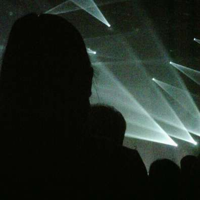
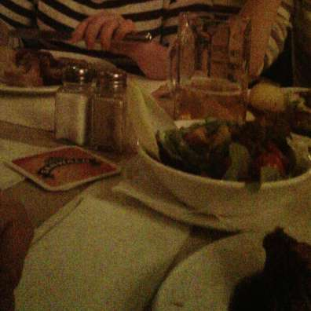
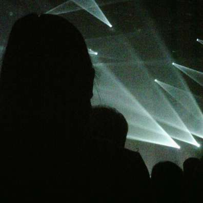
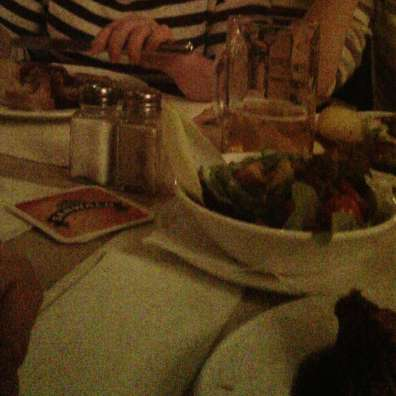

Photographic memory
The Narrative clip is a wearable camera that automatically takes a picture every 30 seconds. One year and a half ago, I decided to back this ambitious Kickstarter project. I will try to explain why I did so and share my experience using the «clip» for a few weeks.
Forget it to better remember
The clip doesn’t have any button. You don’t «switch it on». It is designed to be worn and to automatically take pictures every 30 seconds. To stop, just put it in your pocket or face down on a table. This simple interaction design, its weight and size make the result something that you don’t have to care about. There is a clever “double tap” feature to take a picture and star it, but this is not the main use case. You just wear it, and forget about it.


An experiment
I’ve chosen to give it a try, mostly as an experiment. I am aware that having the ability to record anything I see may have an impact on my personal life, that’s what I want to experience.
I always considered that the most precious things on my computer were my personal pictures (today stored privately online). I like taking a few pictures of events. I have been storing and paying attention to them for the last 15 years. Sometimes, it happens that I visually go into the past and remember a moment with more details that I could do by myself thanks to these images.
Human memory
As Wikipedia describes it, our memory doesn’t store every moment of our life with the same level of details. While our sensory memory let us recall exact details of an item we just saw, we are not storing them and are most likely to forget them in the next minutes (for example, the color the shirt of the person sitting next to you, the exact amount you just paid at a restaurant…). Our short-term memory allows us to explicitly remember an information for a short period of time, but we are most likely to forget it later. We do not remember everything, we are explicitely and implicitely storing scenes of our life in our long-term memory. The fact that we remember a scene more than an other has, I think, many causes: attention, frequency, emotional level…
Photographic memory
The Narrative clip is a different kind of memory, it is lossless. It stores the same level of detail for every picture, every moment. This is, for me, a new kind of memory. It is useful? probably not a lot, but these kind of devices may change the way we are able to remember the past. It is like having an eternal eidetic visual memory, like this Enki Billal character whose quest is to remember the first days after his own birth in Le Sommeil du monstre.
I think being able to go back in time is priceless. Being able to live a second time a given day you experienced a long time ago is an experience that is not possible today, but that we may see tomorrow, and Narrative goes into this direction.
Technically, the pictures taken by the clip are not ideal, the camera’s field of view (70°) is really small compared to the human eye (or a GoPro) and the image sensor could really be improved for dim light. This often leads to noisy pictures, not capturing the whole scene and of a strange framing. While these are negative points and could definitively be improved in future versions, they are also a way to be later surprised of what was extracted from a moment. And the real value is in the series of pictures, that together, create a moment. Most of the time, I am not focusing on one particular taken image, I prefer reviving a moment in a time-lapse mode with the Narrative application.
 





Wearing it
After a few weeks of wearing the clip when I felt confortable doing it, I have more answers to my initials questions: How will people react? Will people or I behave differently? When will I wear it?
First thing, most people that are not in direct interaction with me simply don’t notice it. I think it’s because it’s very discreet, and nobody knows (yet) that these kind of device exist. People I talk directly with notice, or I try to present them the device quite early when we meet. Most of them are curious, and once I explained the principle, they don’t mind if I continue wearing it and very often ask me to send them a “best-of” of the event. I was at first wearing it all the time except in professional situations, it continued but I realise now I sometimes forget it when performing routine tasks.
A lot of data
One pictures from the Narrative clip sizes 2048×1536 and weighs around 250KB. I notice I gather around 750Mo of data per day, which are automatically uploaded and stored encrypted, after analysis, on Narrative’s servers.


What’s next
What’s next is that by storing so much information, we will need powerful personal search engines. Not only being able to search by date in a efficient UI, but also by location, by action (sitting, walking, driving…), by people (face recognition), by image elements (food, grass…). The Narrative apps are far from this and I hope they will improve their mobile apps and offer a great desktop web portal over time. But maybe it’s not their job and should just open a clean API to let other people and companies organise the content.
This powerful search is a vision, but we are not that far from it when we see the power of Google+ personal photo search for example.
Not only pictures?
This idea goes into the broader trend of lifelogging. I already passively record my position with Google Location History, the music I listen on last.fm, log a lot of things on Foursquare and Evernote… which tagline is, by the way, «Remember Everything». That says a lot on their vision, it could have been “The best app to take notes“, but no, they see larger than this, they want to help you remember, and first step into this direction is to help you take notes.
Except for a few notes, check-ins and pictures, gathering all this data is pretty useless today. But I am confident it may have more value in the future. It will be raw resource that other services will tap to generate real customised and personal value. And this value will certainly be more than editing a movie of your life after your death like Robin Williams is doing in The Final Cut.